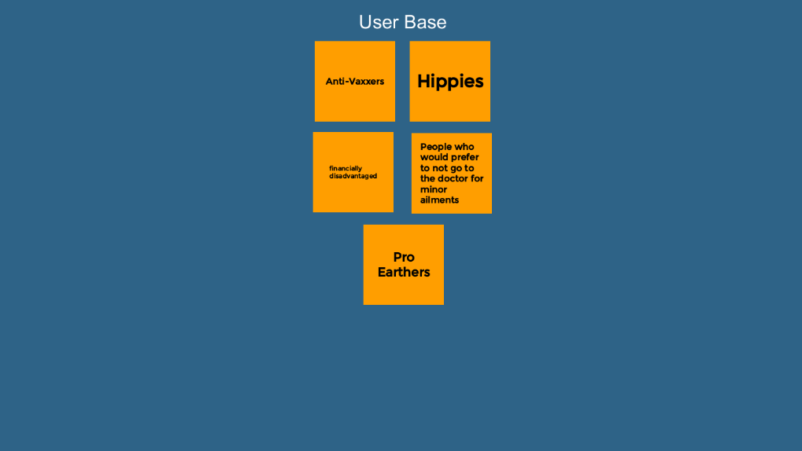
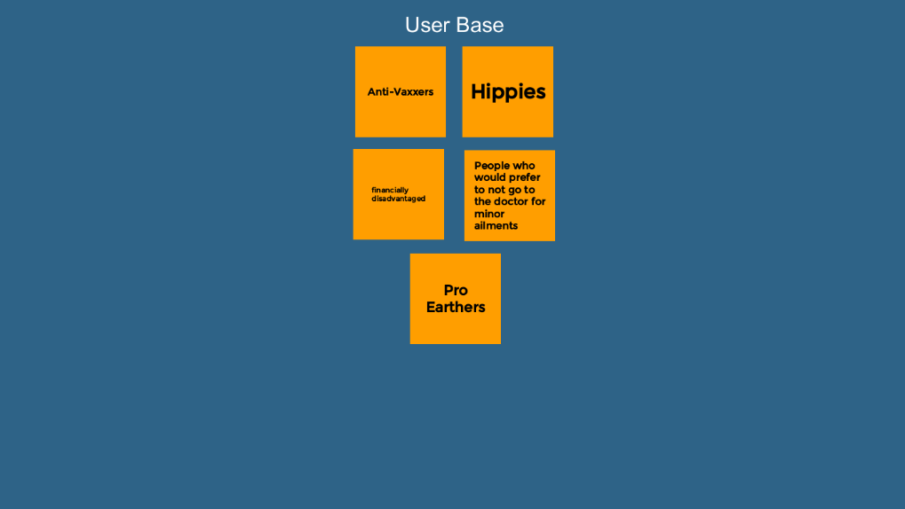
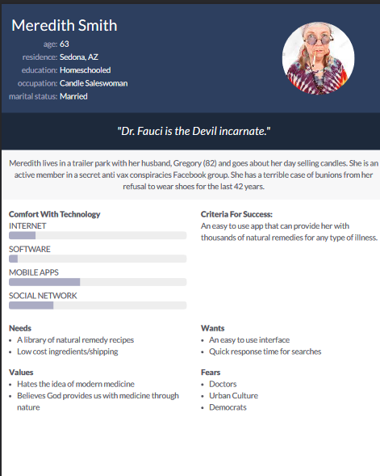
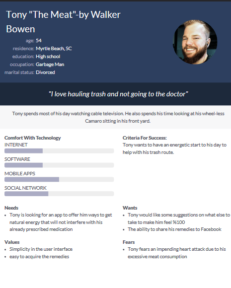
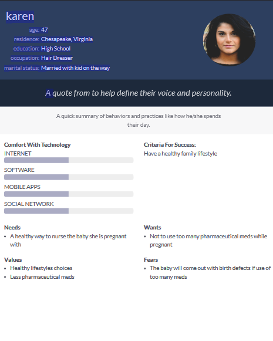
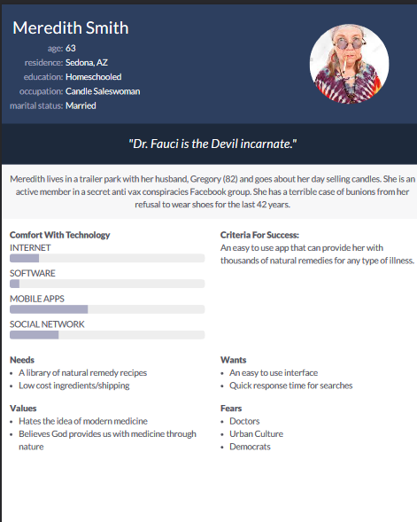
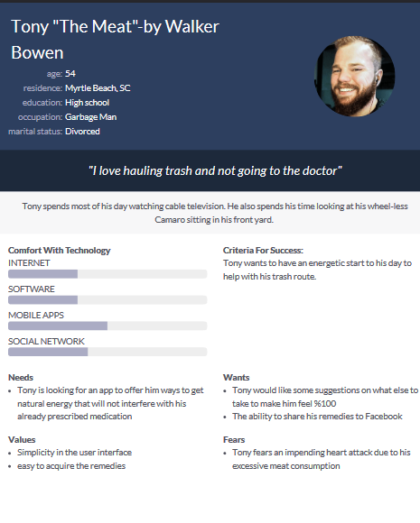
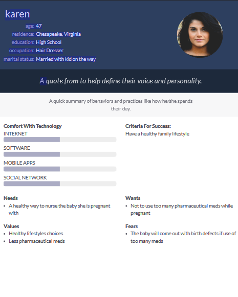

Problem Statement:Natural Remedies
Some people want natural remedies instead of over-the-counter medication for minor ailments. This app would help find the natural remedies for their specific problems.
Some people want natural remedies instead of over-the-counter medication for minor ailments. This app would help find the natural remedies for their specific problems.
 

This allows my group and I to get our thoughts out on some features of the app and think about how we may want to design it in the future.
 





Some personas of typical herbal remedies app users.